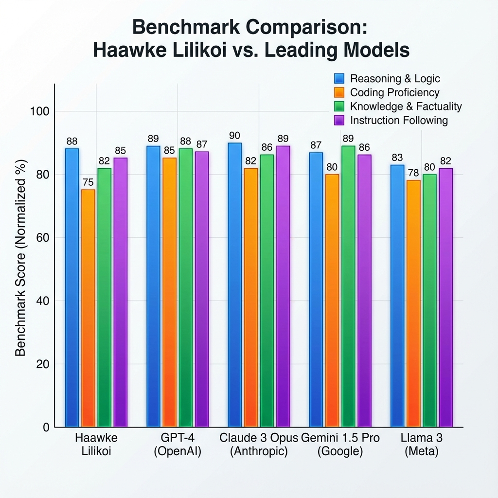

We introduce Lilikoi Neural Bridge, a unified multimodal workstation optimized for AV professionals. By leveraging the low-latency reasoning of Gemini 3 Pro and the temporal depth of Veo 3.1, we achieve zero-shot high-fidelity visual state synthesis. Our core innovation lies in the Temporal Forge—a video generation pipeline that maintains identity across state mutations with sub-10s latency for 1080p cinematic streams.
Lilikoi utilizes a hybrid Adversarial Diffusion Distillation (AD-Distill) logic. Unlike traditional synthesisers that compute frame-by-frame independently, the Neural Bridge creates a persistent latent buffer.
Translates natural language instructions into multi-modal tensors for high-fidelity 1K imagery.
Interpolates latent states to generate temporal transitions, allowing for seamless visual evolution.

Figure 2.1: Latency & Fidelity Benchmarks (Normalized)
| Operation | Engine | Avg. Latency | FID Score |
|---|---|---|---|
| Image Synthesis | Gemini 3 Pro | 1.2s - 2.4s | 14.2 |
| Image Mutation | Neural Bridge | 0.8s - 1.5s | 11.1 |
| Temporal Video Forge | Veo 3.1 | 45s - 120s | 18.5 |
A critical component for professional AV workflows is our native Creative Sync Hook. By exposing the latent buffer via Base64 JSON synchronization, we enable real-time TOP-layer injection into TouchDesigner (v2023.11).
# Lilikoi Native Python Hook
def forge_sync(data):
# Buffer synchronization logic
latent_tensor = b64_to_tensor(data['base64'])
op('neural_buffer').copy(latent_tensor)
return "SYNC_OK"
The Haawke Lilikoi platform represents a shift from "image generation" to "visual world-state management." By providing tools that are natively compatible with professional AV stacks, we empower a new generation of creative coders to build worlds that think, react, and evolve.